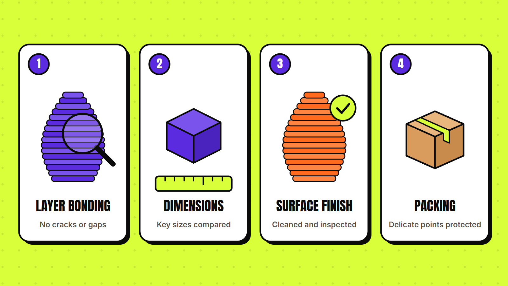

Plenty of people can press "print". The difference between services shows in what happens before and after that button: whether anyone questions a weak design, explains the price, or notices a fault before the box is sealed. Here is how we work at Akrinity, a 3D printing studio in Bhiwandi, and what you can expect from an order.
A file can be technically valid and still a poor plan. Before a custom job starts, we look for thin walls, steep overhangs, tight fits, and loads that run the wrong way across the layers. We also check that the material suits where the part will live. PLA is fine for a shelf ornament and a poor choice for a part left in a hot car.
When a change would make the print more reliable, we tell you what it is and why, and you decide. If you only have an idea, we model an original design and send preview images, so you can ask for changes before anything is printed.
We work with filament printing in PLA+, PETG, and ABS or ASA, and with resin for fine detail. Single-colour printing is the most economical route. Multi-colour printing suits names, logos, and colour blocks, and we confirm the extra cost and time before you pay. The aim is the option that fits the job, which is not always the most expensive one.

Layers must be properly fused. We look for cracks, separation along layer lines, and gaps in walls, which are weak points that may only break later in use.
Where size matters, such as a holder for a specific item or parts that fit together, the critical measurements are compared with the design.
Supports are removed and surfaces cleaned. We look for stringing, blobs, shifted layers, lifted corners, and marks in places that will be seen. Fine layer lines are a normal part of filament printing and are not treated as a fault.
Printed parts can be strong in use and still suffer in transit, where thin points and corners take knocks. The goal of packing is to hold the piece steady and protect the delicate areas. If a parcel arrives damaged, tell us as soon as you notice, with a photo. Details are on the returns page.
| Stage | What you get |
|---|---|
| Request | A reference number for your quote request |
| Review | Suggestions where the design or material should change |
| Quote | Price and lead time in working days, before you pay |
| Approval | Nothing custom is printed until you approve |
| Production | Status updates by email |
| Dispatch | Delivery partner and tracking ID by email |
| Business orders | A GST invoice with your company name and GSTIN |
Being useful includes saying no, or "not this way".
A customer's model may be a product idea or a personal project. Uploaded files are kept in private storage, away from the public website, and are not shown to other customers. We do not display a customer's design publicly without written permission. The file terms set out the details.
Tip: A short sentence about use, such as "this sits on a car dashboard", can change the material we suggest and prevent a failure later.
No. Fine, even lines are how filament printing looks. Splits, gaps, shifted layers, and rough patches in visible places are faults.
They will be very close. Small differences, such as the position of the seam where each layer starts, are normal. Colour can vary slightly between filament batches, so order matching pieces together.
Ask as early as you can. Once a custom part is being printed, a change may not be possible or may need a new quote.
Open it, look over thin points and corners, and compare the size and colour with your order. Report problems with photos while the packaging is still to hand.
Whether it is a replacement clip or a batch of branded stands, the process is the same: send the details, read the quote, and approve it only when you are satisfied. Start on the quote page, read how ordering works, or see what we make.